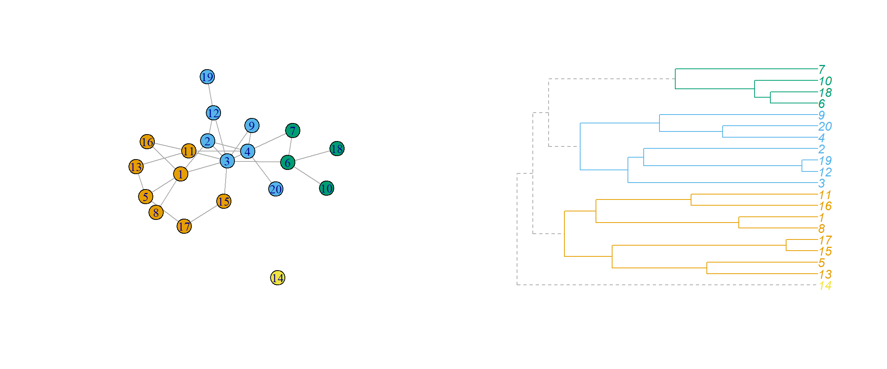
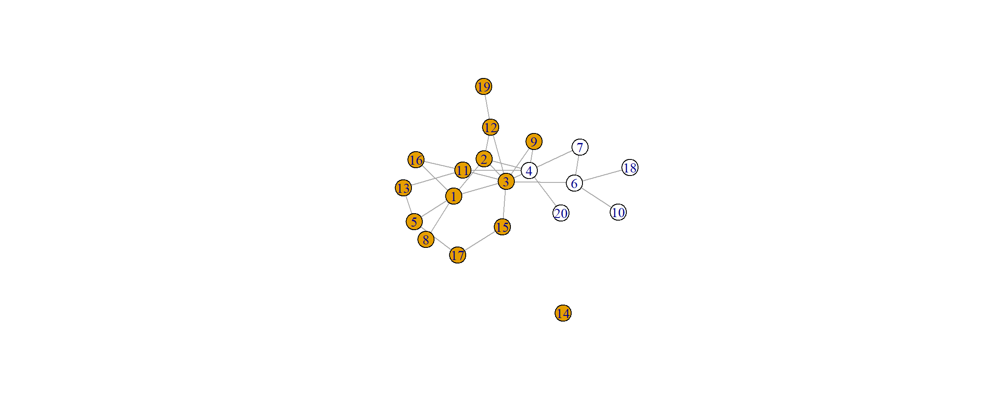
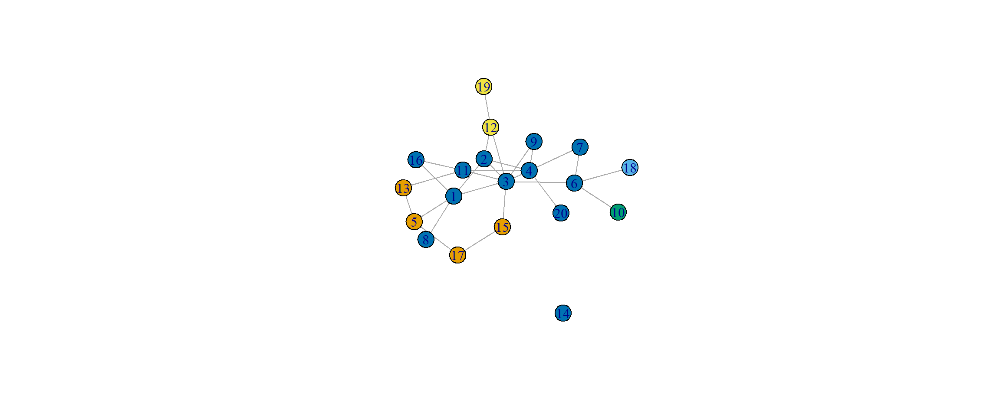
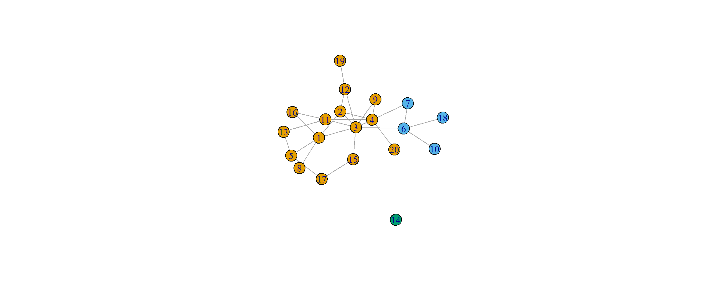
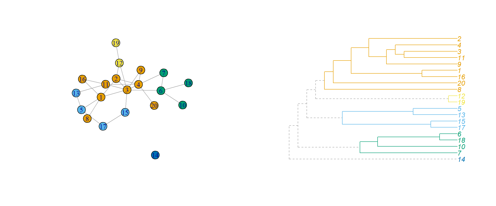

There are many different approaches for the Community Detection problem. Here we are only going to review a few of them. In particular:
then we will overview some other methods that can be applied based on information theory or bewteenness.
Hierarchical clustering is a class of algorithms that may divide in two different families:
clusters are defined in terms of a distance: a similarity between the nodes, then it should reflect our definition of cohesive group. There are many different possible measures for similarity, and this gives a high flexibility to the approach.
The method proceeds as follows:
In our case we are going to use as similartiy measure the modularity, where the classes are defined as precisely the cluster indices.
In this mtehodology falls the fast_greedy algorithm of igraph and we may either use the usual graph representation or a dendrogram
set.seed(101)
mod_net <- ba.game(20, 0.9, out.dist = c(0.1, 0.55, 0.35), directed = FALSE)
comms <- cluster_fast_greedy(mod_net)
par(mfrow = c(1,2))
plot(mod_net,
layout = layout.kamada.kawai,
vertex.color = membership(comms))
dendPlot(comms, mode="phylo", cex=1)
In this case we use spectral graph theory with associates the graph decomposition with the eigen-analysis of graph matrices. For graph partitioning we can define the cut size as the number of edges running between the different groups as
\[\begin{equation} R = \frac{1}{2}\sum_{i,j \text{ in different groups}} A_{ij} \end{equation}\]
take, for example, two groups. Then we can define a vector
\[\begin{equation} s_i = \left\{\begin{array}{ll} 1 & \text{ if the node belongs to group 1} \\ -1 & \text{ if the node belongs to group 2}\end{array}\right. \end{equation}\]
then we can rewrite the cut size as
\[\begin{equation} R = \frac{1}{4}\sum_{i,j}A_{ij}(1 - s_is_j) = \frac{1}{4}\sum_{i,j}\left( k_i\delta_{ij} - A_{ij}\right)s_is_j = \frac{1}{4}\sum_{i, j}L_{ij}s_is_j \end{equation}\]
where the matrix \(L_{ij}\) is known as the graph Laplacian, written in matrix form as \(L=D-A\), where \(D\) is the diagonal degree matrix and \(A\) the adjacency matrix, and then we can write
\[\begin{equation} R = \frac{1}{4}s^T\,L\, s \end{equation}\]
There is a general theorem that states that the number of graph components is directly related to the number of non-zero eigenvalues of the matrix \(L\). Let’s find it in the same case of before.
First let’s find the laplacian and its eigenvalues
## [1] 9.305040e+00 7.233689e+00 6.138829e+00 4.709045e+00 4.605604e+00
## [6] 4.145237e+00 3.587068e+00 2.520518e+00 2.416307e+00 1.836920e+00
## [11] 1.691434e+00 1.345847e+00 1.123092e+00 1.000000e+00 7.611063e-01
## [16] 6.928821e-01 5.317258e-01 3.556554e-01 7.964047e-17 -3.368960e-16In this case we see that there are two eigenvalues that can be taken as 0. The eigenvector of the first non-zero eigevalue is known as the Fiedler vector, and in this case it is
If we are clustering in only two groups, we directly consider the sign of the elements of the Fiedler vector

If we want to cluster in more than 2, then we apply k-means algorithm to the rows of the eigenvectors matrix for the k-smallest eigenvalues.
df <- as.data.frame(eig_dec$vectors[ , (length(eig_dec$values)-6):(length(eig_dec$values)-2)])
fit_kmean <- kmeans(df, 5, nstart = 10)now we can use the clustering_vector as the community membership

if you want to make a dendrogram you must generate the object with the memberships of the nodes to the different clusters, for example adding it as an edge attribute in the graph.
The main idea behind these methods is that a right split in communities will give us a high amount of information about the network. To analyse this idea, Rosvall and Bergstrom created the InfoMAP method that has the following pieces
However, applying this method to each possible configuration is clearly not feasable. However, in information theory the Shannon’s source coding theorem tell us that the entropy of the random walk is precisely the average number of bits per step for the shortest possible bit-string. This average number is given by the map equation
\[\begin{equation} L = qH(Q) + \sum_gp_gH(P_g) \end{equation}\]
where \(q\) is the fraction of time that the random walk spends hopping bewteen groups, \(p_g\) is the fraction of time it spends within and exiting the group \(g\) (see that both quantities are actually just probabilities) and \(H(Q)\) and \(H(P_g)\) are the entropies
\[\begin{equation} H(Q) = -\sum_i Q_i\,log Q_i \end{equation}\]
where \(Q_i\) is the fraction of times that the object \(i\) appears in the sequence. Then \(H(Q)\) is the entropy of the sequence of groups that the random walk passes through while \(H(P_g)\) is the entropy of the nodes in group \(g\) that the random walk passes through.
This method in the end minimizes \(L\) (as we maximize modularity), since a minimum entropy implies a higher order in the system. The point with the BR-method is that it actually allow us to compute this minimization by just moving individual nodes to find new configurations until there is no further improvement and all the quantities in \(L\) can be found just knowing the local structure of the network and the fraction of time that a random walk spends at each node (this is proportional to the degree of the node)
comms <- cluster_infomap(mod_net)
plot(mod_net,
layout = layout.kamada.kawai,
vertex.color = membership(comms))
A completely different approach from the previous ones is searching for the nodes that lie between communities. Then we can define edge betweenness which counts the number of shortest paths in the network. This method proceeds as
this algorithm generates a dendrogram in a divisive way and then we may use modularity to determine the goodness of a configuration.
comms <- cluster_edge_betweenness(mod_net)
par(mfrow = c(1,2))
plot(mod_net,
layout = layout.kamada.kawai,
vertex.color = membership(comms))
dendPlot(comms, mode="phylo", cex=1)